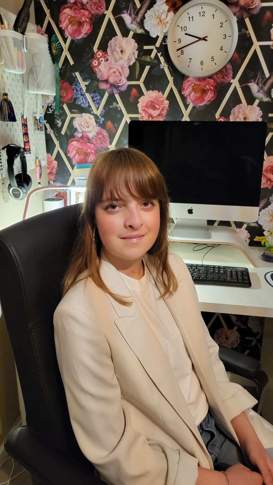

Ik ben 19 jaar en woon in Nesselande, Rotterdam, samen met mijn ouders, zusje en onze twee vogeltjes. Mijn hobbies zijn zingen, YouTube kijken, haken en natuurlijk programmeren.
Momenteel zit ik in het tweede jaar van de opleiding Creative Software Developer aan het Grafisch Lyceum in Rotterdam. Tijdens deze opleiding heb ik veel geleerd over programmeren en het werken met methodes zoals Agile en Scrum. Het doel is om mezelf te ontwikkelen tot fullstack developer.
Ik werk het liefst aan de backend, omdat ik het interessant vind om systemen op te bouwen, met databases te werken en te zorgen dat alles achter de schermen soepel verloopt. Frontend taken pak ik ook graag op wanneer dat nodig is.
Al sinds mijn tiende droomde ik ervan om met computers mooie digitale projecten te maken. Die interesse is in de loop der jaren uitgegroeid tot mijn echte passie voor software development.
Ik haal veel motivatie uit het oplossen van bugs en het bouwen van functionaliteiten die direct goed werken. Daarnaast ben ik bewust bezig met hoe ik AI gebruik: als hulpmiddel om te leren en mezelf te verbeteren, in plaats van dat het het werk voor mij overneemt.
Doorzetten is een van mijn sterkste eigenschappen. Ik blijf zoeken tot ik een oplossing vind en zorg dat mijn werk zo overzichtelijk en gestructureerd mogelijk blijft, zelfs bij moeilijke projecten.
Tijdens mijn opleiding heb ik ervaring opgedaan met HTML5, CSS3 (SASS), JavaScript (ES6, OOP), PHP (OOP) en SQL. Ook werk ik met tools zoals Visual Studio Code, PhpStorm, Arduino IDE en GitHub en heb ik ervaring met hosting via platforms zoals Plesk.
Communicatie en doorzettingsvermogen zijn twee eigenschappen waar ik trots op ben. Ze helpen mij om ook bij uitdagingen het overzicht te bewaren en resultaten te behalen.
Ik werk graag samen in een team, maar kan ook zelfstandig aan de slag wanneer duidelijk is wat er gedaan moet worden. Ik houd mijn werk gestructureerd en overzichtelijk, en vraag om hulp wanneer dat nodig is. Ook help ik anderen waar ik kan.
Als kind puzzelde ik veel, en dat plezier in probleemoplossen zie ik nog steeds terug in programmeren. Het bouwen van functionele en mooie digitale projecten, zoals websites en apps, maakt het werk voor mij leuk en uitdagend.
Neem gerust een kijkje op mijn projectenpagina, waar ik al mijn projecten deel waar ik trots op ben.
Al sinds mijn tiende droomde ik van een carrière waarin ik met computers mooie dingen kan maken.
Op de middelbare school kreeg ik NTI aangeboden, waarbij ik kon kiezen voor de cursus Programmeren, Tijdens deze cursus heb ik mijn allereerste website gemaakt en leerde ik werken met HTML, CSS en Javascript.
Ik begon mijn opleiding aan het Grafisch Lyceum in Rotterdam.
Ik zit momenteel in het tweede van de opleiding en mijn werk is nu voor het eerst online te zien via mijn portfolio en mijn GitHub!
© 2025 Rianne's portfolio. Alle rechten voorbehouden.